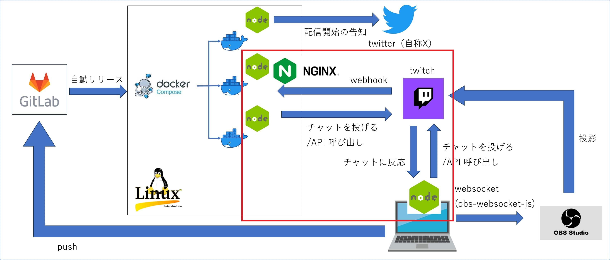
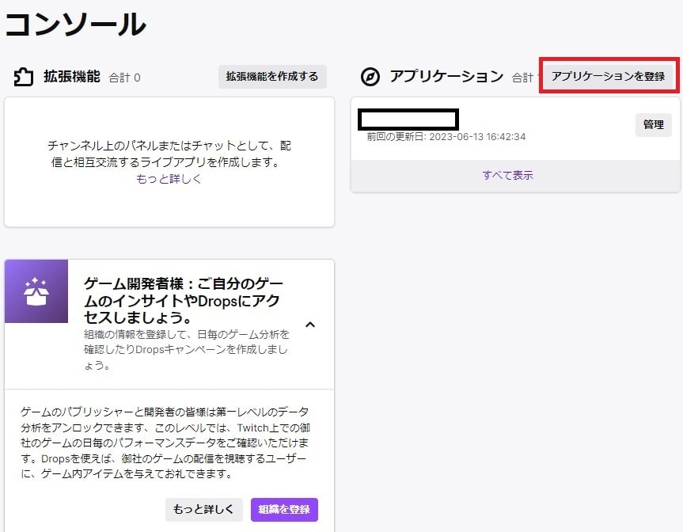

Node.js × Twitch
はじめに
このページは、 Node.js × Twitch × Twitter × OBS の続きです。
twitch イベントを Webhook や tmi.js というライブラリを使用して Node.js で受け取ったり、チャットを投げたりする部分について記載します。以下画像の赤枠部分です。

その他の部分については、以下リンク先に別ページでまとめています。GitLab や Linux, Docker, nginx については記載していません。
アプリケーションの登録
Twitch の機能を使うためには、まず Twitch の developers サイトでアプリケーションを登録する必要があります。
以下リンク先右上の「Log in with Twitch」ボタンから developers サイトにログイン。
Twitch developers
ログイン後、右上の 「Your Console」 ボタンからコンソール画面に遷移して、「アプリケーションを登録」ボタンを押下。

アプリケーション登録画面でアプリケーション名、リダイレクトURL、カテゴリーを入力。
「新しい秘密」ボタンを押下すると秘密鍵が生成される。
秘密鍵とクライアントIDを控えて「保存」ボタンを押下。

Twitch の認証
まず Twitch の Webhook やAPIを使うためには、access token を取得する必要がある。
access token には user access token と app access token の2種類があり、それぞれ用途は大雑把に以下の通り。
-
User access tokens：ユーザー認証が必要な機能を利用する場合に使用する token。
-
App access tokens：ユーザー認証が不要な機能を利用する場合に使用する token。
access token を取得する方法は以下リンク先参照。
Getting OAuth Access Tokens
4種類の token 取得方法があり、使用方法に応じて取得方法が変わります。
今回自作したアプリケーションにおいては、以下2パターンを使用しています。
- Client credentials grant flow：Webhook を受信する際に使用。
- Authorization code grant flow：API を発行する際に使用。
具体的にどうやって token を取得するかはExamples of the four flowsに書いていますが、以下にも記載します。
Client credentials grant flow
Client credentials grant flow では以下のような curl コマンドを発行します。
Client credentials grant flow example(App access token)curl -X POST 'https://id.twitch.tv/oauth2/token' \
-H 'Content-Type: application/x-www-form-urlencoded' \
-d 'client_id=XXXXXX&client_secret=YYYYYY&grant_type=client_credentials'
- XXXXXX：アプリケーションの登録で取得したクライアントID
- YYYYYY：アプリケーションの登録で取得した秘密鍵
以下の形式でレスポンスが返ってくるので、 access_token を保存する。
{
"access_token":"[発行されたトークン]",
"expires_in":[有効期限],
"token_type":"bearer"
}
Authorization code grant flow
Authorization code grant flow では以下のような 形式の URL をブラウザに入力します。
Authorization code grant flow example(User access token)https://id.twitch.tv/oauth2/authorize?response_type=code&client_id=XXXXXX&redirect_uri=ZZZZZZ&scope=[必要なスコープ]&state=c3ab8aa609ea11e793ae92361f002671- XXXXXX：アプリケーションの登録で取得したクライアントID
- ZZZZZZ：アプリケーションの登録で設定したリダイレクトURL
- 必要なスコープ：リンク先を参考に必要なスコープを指定
例として、「channel:read:polls」と「channel:manage:polls」の2つをスコープに指定する場合、URLの入力は「channel%3Amanage%3Apolls+channel%3Aread%3Apolls」として以下のようになります。
ここで「%3A」は「:」のURLエンコードです。「+」で二つのスコープを連結しています。
https://id.twitch.tv/oauth2/authorize?response_type=code&client_id=XXXXXX&redirect_uri=ZZZZZZ&scope=channel%3Amanage%3Apolls+channel%3Aread%3Apolls&state=c3ab8aa609ea11e793ae92361f002671
上記をブラウザに入力すると、 redirect_uri に指定したURLにリダイレクトされる。リダイレクト先のURLに、以下のような形式で access_token が記載されているのでそれを保存する。
[指定したリダイレクトURL]/#access_token=[発行されたトークン]&scope=[指定したスコープ]&token_type=bearer
スコープに指定できる具体的な値は Twitch API scopes 参照。必要なスコープは発行する API ごとに異なる。例えば、投票を開始する API を呼び出す場合、 Polls を見ると「The endpoint requires a user access token with scope channel:manage:polls」とあるので、必要なスコープは「channel:manage:polls」だということがわかる。
Twitch のユーザー
Twitch では、ユーザーを示す項目は大きく3種類あります。
API や Webhook を使う際に理解しておく必要があります。
- user_name/login_name：ログインするときのid。アカウントの設定画面の日本語名称は「ユーザー名」。後から変更できる。
- display_name：チャット欄などに表示される名前。アカウントの設定画面の日本語名称は「表示名」。後から変更できる。設定していないユーザーもいる。
- user_id：Twitch が裏で採番している一意なid。通常意識しない。変更不可。
呼び方は統一されていない気がしますが、項目としてはこの3つがあります。
display_nameが設定されているユーザーの場合、チャットしたときの名前が「あああ(aaa)」と表示されます。この「あああ」が display_name で「aaa」が user_name です。
Twitch の API や Webhook を使用するときは user_name と user_id を結構使うので、この違いは把握しておきたい。
下記リンク先から user_name と user_id を相互に変換することができます。結構使うことはあるのでブックマークしておくと良いでしょう。
Convert Twitch Username to Channel ID
Node.js × tmi.js
event emitter
tmi.js
github tmi.js
tmi.jsで拾えるイベントの全量は以下リンク先参照。
github tmijs/docs
webhookと被っているものが結構ある。
webhookよりはtmi.jsを使った方が（たぶん）早いので基本的にtmi.jsを使えばいいと思うが、raidはwebhookの方が使い勝手が良いと思います。
tmi.js の raidだと、 display_name を設定しているユーザーの場合、display_name のみが返されるため、 user_name を取得できないからです。display_name をキーに user_name を返してくれるAPI は（たぶん）ないので、結構困ります。
Webhookは user_name と display_name の両方を返してくれます。
tmi.js を改造するブログ記事もありますが、外部ライブラリを改造すると、それが原因で予期せぬ挙動をすることも考えられるので、あまりお勧めできません。
Zenn tmi.jsでRaidのユーザ名・表示名を別々に取得したい
以下は、誰かがチャットするたびに稼働する処理の例。
Message
twitch_bot.js'use strict';
import tmi from 'tmi.js';
const opts = {
identity: {
username: 'user_name',
password: 'oauth:'+[Authorization code grant flowで取得した access_token],
},
channels: [
'チャンネル名(= user_name)'
]
};
const twClientBot = new tmi.client(opts)
// チャットに反応
twClientBot.on('message', (channel, userstate, msg, self) => {
if (self) return; // Ignore messages from the bot
// 何か処理
});
// Connect to Twitch:
twClientBot.connect();
user_state には以下のような情報が json 形式で入っています。
json の中身変わってるっぽい
{
'badges': { 'broadcaster': '1', 'warcraft': 'horde' },
'color': '#FFFFFF',
'display-name': 'サンプル',
'emotes': { '25': [ '0-4' ] },
'mod': true,
'room-id': '[数値]',
'subscriber': false,
'turbo': true,
'user-id': '[数値]',
'user-type': 'mod',
'emotes-raw': '25:0-4',
'badges-raw': 'broadcaster/1,warcraft/horde',
'username': 'sample',
'message-type': 'chat'
}
Node.js × Webhook
Webhook でイベントの通知を受け取るためには、まず受け取るサーバを構築する必要があります。以下リンク先で詳細に解説されていますが、ここでも記載します。
Getting Events Using Webhook Callbacks
Webhook でイベントを受け取るためには、まず以下のような形式で curl コマンドを実行する必要があります。
curl -X POST -d '{
"type":"[subscription_type]",
"version":"1",
"condition":{
"broadcaster_user_id":"[user_id]"
},
"transport":{
"method":"webhook",
"callback":"[callback_url]",
"secret":"[secret]"
}
}'
-H "Content-Type: application/json"
-H "Authorization: Bearer [access_token]"
-H "client-id: [client_id]"
https://api.twitch.tv/helix/eventsub/subscriptions
- subscription_type：Subscription Typesの Name 列。配信開始なら 'stream.online' を、チャンネルポイントの使用を受け取るなら 'channel.channel_points_custom_reward_redemption.add' を指定。
- user_id：イベントを受け取りたいユーザーの user_id
-
callback_url：Webhook でイベントの通知を受け取りたいURL
(https://[ホスト名]/[パス]) https じゃないとダメだったような？ - secret：受け取ったサーバで認証に使用する値
- access_token：Client credentials grant flow で取得した access_token
- client_id：アプリケーションの登録で取得したクライアントID
上記 curl を実行すると callback_url に確認のリクエストが飛んでくる。
リクエストヘッダーの 'Twitch-Eventsub-Message-Type' に 'webhook_callback_verification' が入ってくるので、その場合は body 部の challenge を status 200 でそのまま返せばOK。
Webhook イベントを受け取るためのサーバ側の Node.js のコードは以下の通り（全量のコードを後に載せていますが、長いので抜粋）。
確認のリクエストを受ける部分抜粋app.post([パス], async (req, res) => {
const MESSAGE_TYPE = 'Twitch-Eventsub-Message-Type'.toLowerCase();
const messageType = req.header(MESSAGE_TYPE).toLowerCase();
const MESSAGE_TYPE_VERIFICATION = 'webhook_callback_verification';
// 初回認証
if (messageType === MESSAGE_TYPE_VERIFICATION) {
res.status(200).send(req.body.challenge);
...
}
}
以下の curl コマンドを実行すると、問題なく処理されているかを確認することができます。
access_token, client_id に設定する値は先の curl コマンドの時と同じです。
curl -X GET 'https://api.twitch.tv/helix/eventsub/subscriptions' \
-H 'Authorization: Bearer [access_token]' \
-H 'Client-Id: [client_id]'
以下のようなレスポンスが返ってきます。 status が enabled になっていれば問題なしです。
{
"total":1,
"data":[{
"id":"xxxxxxxxxx",
"status":"enabled",
"type":[指定した subscription_type],
"version":"1",
"condition":{
"broadcaster_user_id":[指定した user_id]
},
"created_at":"yyyy-MM-dd'T'HH:mm:ss.SSSSSSSSSSSZ",
"transport":{
"method":"webhook",
"callback":[指定した callback_url]
},
"cost":0
}],
"max_total_cost":10000,"total_cost":0,"pagination":{}
}
以下が（ほぼ）全量の Node.js のコードです。Webhook イベントの通知を受け取った時の処理も記載しています。
Twitch から送られてきたものであることを確認するため、HMAC認証のコードを入れています。これについては Verifying the event message も参照してください。
（ほぼ）全量'use strict';
import crypto from 'crypto';
import {createServer} from 'http';
import express from 'express';
import bodyParser from 'body-parser';
const app = express();
app.use(bodyParser.json())
// Notification request header
const TWITCH_MESSAGE_ID = 'Twitch-Eventsub-Message-Id'.toLowerCase();
const TWITCH_MESSAGE_TIMESTAMP = 'Twitch-Eventsub-Message-Timestamp'.toLowerCase();
const TWITCH_MESSAGE_SIGNATURE = 'Twitch-Eventsub-Message-Signature'.toLowerCase();
const MESSAGE_TYPE = 'Twitch-Eventsub-Message-Type'.toLowerCase();
// Notification message types
const MESSAGE_TYPE_VERIFICATION = 'webhook_callback_verification';
const MESSAGE_TYPE_NOTIFICATION = 'notification';
// event type
const SUBSCRITION_TYPE = 'Twitch-Eventsub-Subscription-Type'.toLowerCase();
// Prepend this string to the HMAC that's created from the message
const HMAC_PREFIX = 'sha256=';
// post でリクエスト時に処理するコールバック関数指定
app.post([エンドポイント], async (req, res) => {
let secret = getSecret();
let hmacMsg = getHmacMessage(req);
let hmac = HMAC_PREFIX + getHmac(secret, hmacMsg); // Signature to compare
// hmac認証失敗なら速攻で返す
if (!verifyMessage(hmac, req.headers[TWITCH_MESSAGE_SIGNATURE])) {
res.sendStatus(403);
return
}
const messageType = req.header(MESSAGE_TYPE).toLowerCase();
// 初回認証
if (messageType === MESSAGE_TYPE_VERIFICATION) {
res.status(200).send(req.body.challenge);
// イベント通知
} else if (messageType === MESSAGE_TYPE_NOTIFICATION) {
const subscType = req.header(SUBSCRITION_TYPE).toLowerCase();
switch (subscType) {
// 配信開始時の処理
case 'stream.online':
// 何か処理
res.sendStatus(200);
break;
// チャンネルポイントが使用された時の処理
case 'channel.channel_points_custom_reward_redemption.add':
// 何か処理
res.sendStatus(200);
break;
// raid を受けた／した
case 'channel.raid':
// 何か処理
res.sendStatus(200);
break;
// 配信終了
case 'stream.offline':
// 何か処理
res.sendStatus(200);
break;
default:
console.log(new Date() + ':unexpected subscription type.');
res.sendStatus(200);
}
}
});
const server = createServer(app);
server.listen(8080);
function getSecret() {
// TODO: Get your secret from secure storage. This is the secret you passed
// when you subscribed to the event.
return '<your secret goes here>';
}
// Build the message used to get the HMAC.
function getHmacMessage(req) {
return (req.headers[TWITCH_MESSAGE_ID] +
req.headers[TWITCH_MESSAGE_TIMESTAMP] +
JSON.stringify(req.body));
}
// Get the HMAC.
function getHmac(secret, hmacMsg) {
return crypto.createHmac('sha256', secret)
.update(hmacMsg)
.digest('hex');
}
// Verify whether our hash matches the hash that Twitch passed in the header.
function verifyMessage(hmac, verifySignature) {
return crypto.timingSafeEqual(Buffer.from(hmac), Buffer.from(verifySignature));
}
Node.js × Twitch API
Twitch の API の一覧と仕様は Twitch API Reference 参照。リクエストパラメータやリクエストボディ、レスポンスの内容、必要なスコープがわかるようになっている。
例として、ユーザーを Ban する Node.js の関数を作ってみます。
user_name を引数で受け取り、Get Users API で user_name を元に user_id を取得し、それを使用して Ban User API で ban するという流れです。
※access_token やクライアントID などの機密情報は、外部ファイルに json 形式などで保存した上で、そこから取得するようにしてください。
async function banUser(banUserName) {
// user_name から user_id を取得
const get_users_url = `https://api.twitch.tv/helix/users?login=${banUserName}`
let result = await fetch(get_users_url , {
headers: {
"Authorization": "Bearer " + [Authorization code grant flowで取得した access_token],
"Client-Id": [アプリケーションの登録で取得したクライアントID]
},
})
let banUserInfo = await result.json()
let banUserId = banUserInfo.data[0].id
// 対象ユーザーをban
const ban_api_url = `https://api.twitch.tv/helix/moderation/bans?broadcaster_id=[配信者のuser_id]&moderator_id=[モデレータのuser_id]`
return await fetch(ban_api_url, {
method: 'POST',
headers: {
'Content-Type': 'application/json',
'Authorization': 'Bearer ' + [Authorization code grant flowで取得した access_token],
'Client-Id': [アプリケーションの登録で取得したクライアントID]
},
body: JSON.stringify({
'data': {
'user_id': banUserId
},
}),
})
}
Node.js と Twitch の組み合わせについては以上です。その他の組み合わせについては以下リンク先を参照してください。
その他の実装
参考サイト
- Twitch developers Getting OAuth Access Tokens
- Twitch developers Authentication
- Twitch developers Getting Events Using Webhook Callbacks
- Twitch developers Twitch API
- Twitch developers Twitch Access Token Scopes
- Twitch developers Twitch API Reference
- Twitch developers Subscription Types
- Twitch Channel ID and User ID Convertor
- tmi.js
- github tmi.js
- github tmijs/docs
- Zenn tmi.jsでRaidのユーザ名・表示名を別々に取得したい
- Qiita Twitch APIを利用してみよう